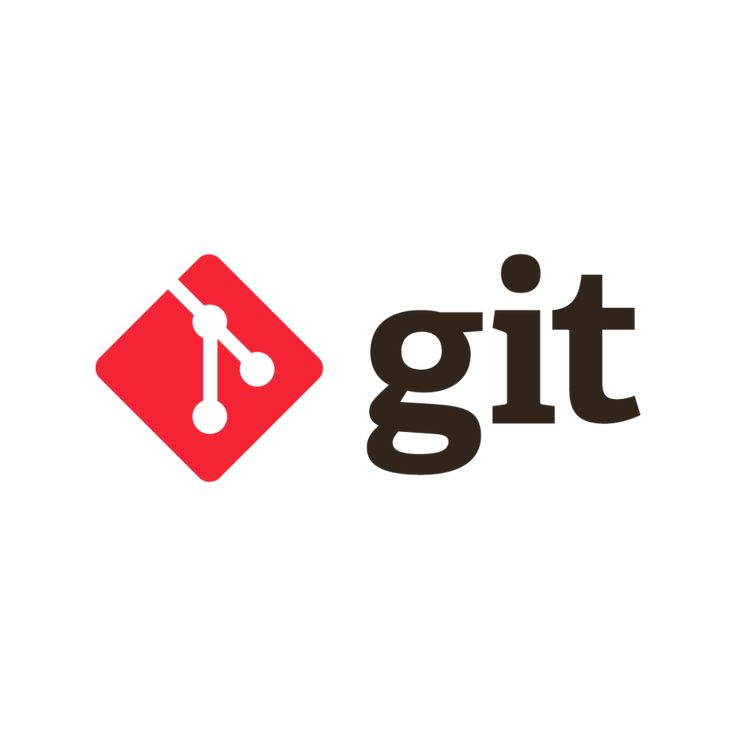

¿Qué es Git?

Git es un sistema de control de versiones distribuido que permite a los desarrolladores llevar un registro de los cambios realizados en el código fuente de un proyecto.
¿Qué es GitHub?
GitHub es una plataforma en línea que aloja repositorios Git, facilitando la colaboración entre desarrolladores y la gestión de proyectos.
¿Cuál es la diferencia?
- Git: herramienta que controla el historial del código.
- GitHub: sitio web donde puedes subir tu código Git y compartirlo.